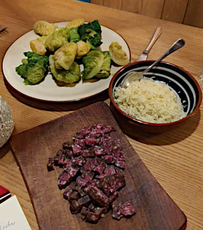

| Zutaten für 4 Personen: | |
| 200g | Knöpflimehl |
| 100g | Mehl |
| 0.75 TL | Salz |
| wenig | Pfeffer |
| 1.25 dl | Milch |
| 1.25 dl | Wasser |
| 2 | Eier |
| 200g | Salsiz |
| 50g | Bündner Bergkäse |
| 0.5 Bund | Petersilie |
| 1 Zweiglein | Pfefferminze |
| 500g | Mangold (20 Blätter |
| 2 dl | Fleischbouillon |
| 2 dl | Vollrahm |
Knöpflimehl, Mehl, Salz und Pfeffer in einer Schüssel mischen. Milchwasser und Eier verrühren, dazugiessen, mit einer Kelle mischen, so lange klopfen, bis der Teig glänzt und Blasen wirft.
Zugedeckt bei Raumtemperatur ca. 30 Min. quellen lassen.
Salsiz schälen, in Würfeli schneiden, zum Teig geben. Käse fein dazureiben. Petersilie und Pfefferminze fein schneiden, daruntermischen.
Ofen auf 60 Grad vorheizen.
Mangoldblätter im siedenden Salzwasser portionenweise je ca. 30 Sek. blanchieren, herausnehmen. Kurz in kaltes Wasser legen, abtropfen, auf einem Tuch auslegen, trocken tupfen.
Je 1 - 2 EL Teig auf ein Blatt geben, seitliche Blattränder einschlagen, satt aufrollen.
Bouillon und Rahm in einer weiten Pfanne aufkochen, Hitze reduzieren. 10 Capuns beigeben, zugedeckt bei kleiner Hitze ca. 8 Min. köcheln, herausnehmen, abtropfen, warm stellen. Zweite Portion gleich zubereiten, warm gestellte Capuns wieder beigeben.
767 kCal pro Person
Betty Bossi: Rezept
Hat am 17.12.2023 gut geschmeckt RE
@LINKBACK_TAG@ @WAKELOCK@